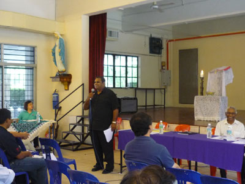

Christmas at St Michael's Church
Click here to view Christmas at St Michael's church. A big "Thank You" to BECs of Chateau Garden, Taman Botani and all other volunteers for their generous and creative efforts in bringing these beautiful depictions of Christmas to our parish.
Priestly Ordination of Fr Andrew Wong - 30th November 2011
The whole church rejoiced and witnessed the ordination of one of the parish's own sons, Fr Andrew Wong on 30th November 2011. Click here to watch excerpts from the ordination ceremony. You can also click on the photos below to view larger images of the photos.More details about this ordination can be found at the online Herald.


Blood Donation Campaign - 13th November 2011
A blood donation campaign was jointly organised by St Michael's Church Chinese Apostolate together with the Buddhist Light International Association Ipoh and Sg. Siput branch. The bood donation drive was held at the Ground Floor of Ipoh Parade Shopping Centre.
St Michael's Church Annual Parish Assembly - 13th November 2011

St Michael Feast Day and Confirmation Mass - 2nd October 2011
Parishioners celebrated this year's Feast Day of St Michael together with the Confirmation Mass. Bishop Anthony, Fr Moses Lui, Rev. Deacon Andrew Wong and Monsignor Liew were on hand to celebrate the mass held on the morning of 2nd October 2011. A total of 41 candidates were confirmed. Parishioners enjoyed a light breakfast and fellowship courtesy of the parish immediately after the mass.
30th Anniversary of Monsignor Liew's Sacerdotal Ordination - 4th September 2011
Parishioners celebrated Monsignor Stephen Liew's 30th Anniversary of his Sacerdotal Ordination with a lunch at She Lai Ton restaurant on 4th September 2011. Monsignor Liew thanked everyone with a short speech. Bishop Antony, priests and parishioners from nearby towns were also in attendance on this happy occasion. We wish Monsignor Liew another fruitful 30 years in his journey of faith.

Hari Wanita - 13th August 2011
Scenes from Hari Wanita event organised by the Catholic Women's League of St. Michael's Church, Ipoh.

Scenes from Parish Telematch - 3rd July 2011
Click on the pictures below to view larger picture in a separate window.

Donation Amount for Lenten Campaign 2011
Donations collected for this year's Lenten Campaign amounted to RM34,100.00. The entire Lenten funds collected will be forwarded to the Penang Office for Human Development (POHD) for its various outreach activities and on-going projects. The second Lenten project, i.e. the Lenten Fast for the Poor project organised by the our Parish Human Development Committee (PHDC) raised RM2,216.00.
Scenes from Easter Vigil - 23rd April 2011
Blood Donation Campaign - 10th April 2011 
A Blood Donation drive was held at the PAC Hall on 10th April 2011 in aid of Fatimah Hospital.
Awareness Talk 'Looking at the Gospel with Chinese Eyes' - 26th March 2011
More than a hundred and thirty parishioners turned out for the talk organised by the PHDC on 26th March 2011. Fr.Ferdinand Bouckhout, a Belgian priest based in Hong Kong received a warm welcome and truly impressed the crowd with his insightful explanations in perfect Cantonese. It is hoped that this will be the first of many more visits by Fr. Bouckhout.
Launch of Lenten Campaign 2011 - 12th and 13th March 2011

The 2001 Lenten Campaign was launched at St Michael's Church Ipoh on the weekend of 12th and 13th March 2011. The Love Squad comprising members of St Michael's church youth group put up a lively performance comprising a slideshow and song stressing on on this year's Lenten theme of "Light a Life as a Family". Lenten envelopes were later distributed to parishioners by members of the Love Squad.
Parishioners are reminded to return their Lenten donations to the PHDC booths which will be set up outside the church for the season of Lent.
Lenten Retreat - 5th to 12th March 2011
To prepare for Lent, the parish organised two Lenten Retreats for parishioners of St Michael. The retreat in Mandarin on 5th and 6th of March 2011 was extremely well received and conducted by the affable Fr. Joseph Heng. More than 300 Mandarin speaking parishioners were in attendance. The retreat in English on 12th and 13th March 2011 was conducted by Mr. Martin Jalleh and was attended by more than a hundred parishioners.
Installation of New Parish Priest - 13th February 2011
Monsignor Stephen Liew was officially installed as Parish Priest of St Michael's Church by Bishop Antony during the Sunday morning mass on 13th February 2011.
Parish Chinese New Year Dinner - 13th February 2011
The annual Chinese New Year dinner organised by the Chinese Apostolate was held at Peter Pang Hall on the evening of 13th February 2011.
Constitutional Rights Forum - 12th February 2011

This forum is a collaboration between the PHDC of St Michael's Church Ipoh and the Constitutional Law Committee of the Malaysian Bar Council. The Constitutional Law Committee spearheaded by Mr. Edmund Bon, has been responsible for initiating the My Constitution Campaign. This ongoing campaign and recent forum at St Michael's Church, aim to educate and empower the citizens of Malaysia about the constitutional provisions that safeguard their rights and institutions created under it. The forum was well-attended by parishioners and fellow parishioners from other Catholic churches such as OLOL and OMPH. The PHDC and the parish would like to thank Mr Edmund Bon and his team who travelled from Kuala Lumpur to facilitate this event. We are grateful to the moderators and speakers Ms Yvonne Yeoh, Mr. Chan Kok Keong, Mr. Nizam Bashir, Mr Cheang Lek Choy, Ms Adriene Leong and Mr. Edwin Nathan for their invaluable contributions to this forum.
It is hoped that we, the people will now be more informed and aware of our own rights as Malaysians.
Parishioners are encouraged to log onto:
www.facebook.com/MyConstitution
www.youtube.com/user/PerlembagaanKu
Malaysian Bar Constitutional Law Committee
to educate themselves on their rights as Malaysians or to download the Rakyat Guides on the Constitution.
With the General Elections looming, it is high time we evaluate the performance of our elected representatives and their parties as to whether they are truly representing our rights under the constitution.
Ponggal - 16th January 2011
The parish's Indian Group celebrated the Indian Harvest Festival "Ponggal" on Sunday,16th Jan 2011. A Ponggal feast of sweet rice, kacang and Nescafe was served to parishioners after the 8.00a.m. mass at the PAC hall.Parishioners were also treated to a flower tying and palm pleating contest in the hall.